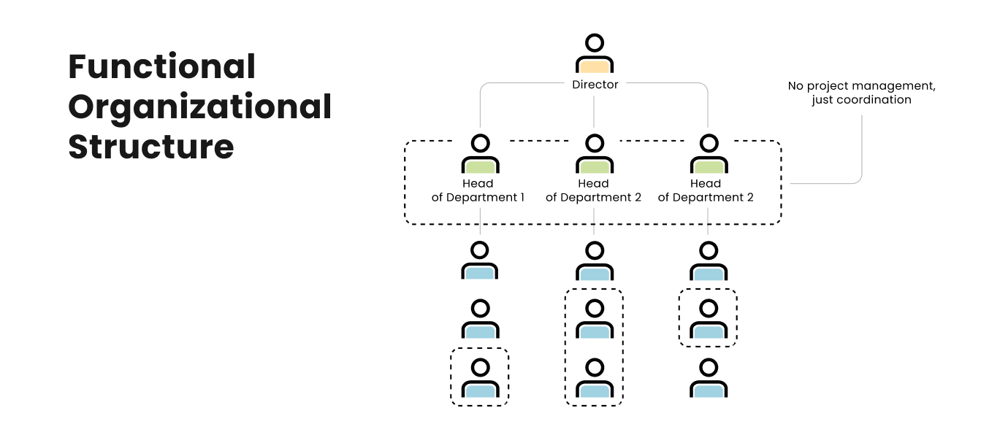
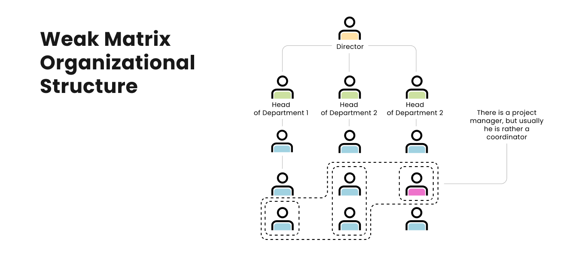
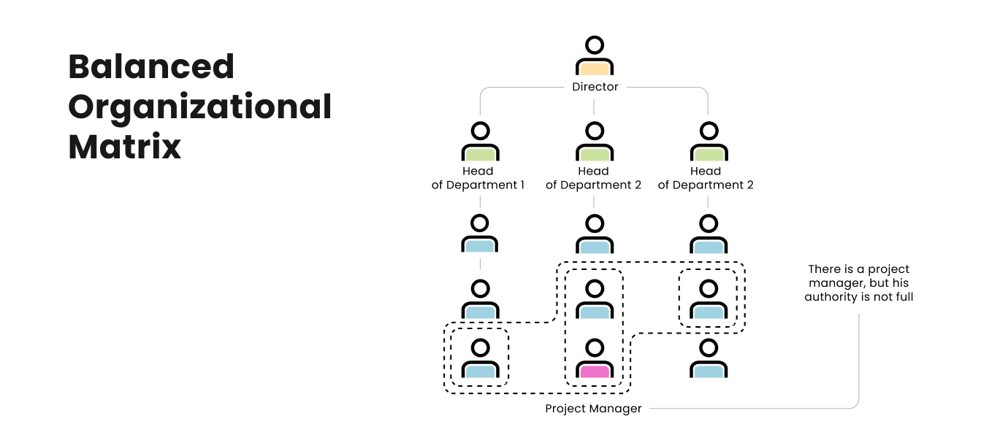
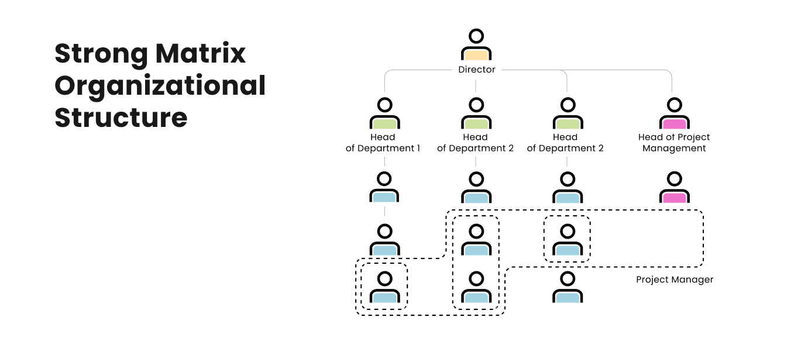
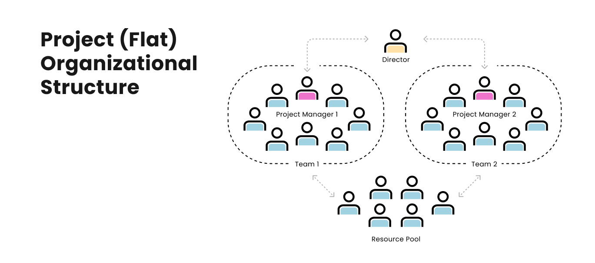

flowchart TD
P([🗂️ PROJECT]) --> T
P --> U
P --> G
T["⏱️ TEMPORARY<br/>Has a definite start<br/>and end date"]
U["🔷 UNIQUE<br/>Produces a unique<br/>output or result"]
G["🎯 GOAL-ORIENTED<br/>Created to achieve a<br/>specific objective"]
style P fill:#1d4ed8,color:#fff,stroke:#1d4ed8
style T fill:#dbeafe,stroke:#3b82f6,color:#1e40af
style U fill:#dcfce7,stroke:#22c55e,color:#166534
style G fill:#fef9c3,stroke:#eab308,color:#854d0e
2 Introduction to Project Management
Learning Outcomes
2.1 What Is a Project?
A project is a temporary endeavour undertaken to create a unique product, service, or result (Project Management Institute 2021).
The three essential characteristics of every project are:
2.1.1 Projects vs. Operations
One of the most important distinctions in management is between projects and operations:
| Characteristic | Projects | Operations |
|---|---|---|
| Duration | Temporary | Ongoing |
| Output | Unique | Repetitive |
| Purpose | Change | Maintain |
| Team | Temporary team | Permanent staff |
| Budget | Approved per project | Annual budgets |
| Risk | Higher | Lower, routine |
Engineering Examples:
🏗️ Project: Designing and building a new suspension bridge
⚙️ Operation: Maintaining and inspecting the bridge annually
💻 Project: Developing a new traffic management software system
🖥️ Operation: Running and supporting the traffic management system
2.2 The Project Lifecycle
Every project passes through a series of phases from inception to completion. The PMI recognises five Process Groups:
%%{init: {'flowchart': {'nodeSpacing': 30, 'rankSpacing': 60}}}%%
flowchart LR
A["🚀 INITIATING<br/>Define project<br/>Authorise & fund<br/>Identify stakeholders"]
B["📋 PLANNING<br/>Develop the plan<br/>Define scope<br/>Schedule & budget"]
C["⚙️ EXECUTING<br/>Do the work<br/>Manage teams<br/>Produce deliverables"]
D["📊 MONITORING<br/>& CONTROLLING<br/>Track progress<br/>Control changes<br/>Manage issues"]
E["🏁 CLOSING<br/>Finalise all work<br/>Hand over asset<br/>Lessons learned"]
A --> B --> C --> E
C --> D
D --> C
D --> E
B --> D
style A fill:#4f46e5,color:#fff,stroke:#4f46e5
style B fill:#0f766e,color:#fff,stroke:#0f766e
style C fill:#15803d,color:#fff,stroke:#15803d
style D fill:#b45309,color:#fff,stroke:#b45309
style E fill:#b91c1c,color:#fff,stroke:#b91c1c
2.2.1 Level of Activity Through the Lifecycle
The level of effort, cost, and staffing varies considerably across the project lifecycle:
xychart-beta
title "Project Activity Level over Time"
x-axis ["Initiating", "Planning", "Early Execution", "Peak Execution", "Late Execution", "Closing"]
y-axis "Activity Level (%)" 0 --> 100
bar [10, 30, 55, 100, 70, 20]
line [10, 30, 55, 100, 70, 20]
2.3 The Triple Constraint
The Triple Constraint (also known as the Iron Triangle) is the foundation of project management. Every project must be managed within three interrelated constraints:
%%{init: {'flowchart': {'nodeSpacing': 30, 'rankSpacing': 40}}}%%
graph LR
S["📐 SCOPE<br/>Deliverables & features<br/>What is included?"]
T["⏱️ TIME<br/>Deadline & schedule<br/>How long will it take?"]
C["💰 COST<br/>Budget & resources<br/>How much will it cost?"]
Q["⭐ QUALITY<br/>at the centre"]
S --- T
T --- C
C --- S
S --- Q
T --- Q
C --- Q
style S fill:#3b82f6,color:#fff,stroke:#3b82f6
style T fill:#22c55e,color:#fff,stroke:#22c55e
style C fill:#f97316,color:#fff,stroke:#f97316
style Q fill:#fef9c3,stroke:#eab308,color:#854d0e
2.3.1 Extended Constraints (The Six-Sided Diamond)
Modern project management recognises additional constraints beyond the original three:
“What are we building?” - Defines the work to be completed - Includes all deliverables and acceptance criteria - Controlled through a scope management plan - Changes managed via a formal change control process
“When will it be done?” - Total project duration and milestone dates - Drives the schedule and critical path - Measured via Gantt charts and network diagrams - Buffer time (float) must be carefully managed
“How much will it cost?” - Total approved budget for the project - Includes labour, materials, equipment, and overheads - Tracked using Earned Value Management (EVM) - Contingency reserves held for risks
“How good must it be?” - The standard to which deliverables must conform - Defined in specifications and acceptance criteria - Managed through QA (prevention) and QC (inspection) - Cannot be sacrificed to save cost or time
“What could go wrong?” - Uncertainty that can affect objectives - Can be positive (opportunities) or negative (threats) - Managed through identification, analysis, and response planning - Risks increase when other constraints are squeezed
“Who and what do we need?” - Human resources (skills, availability, roles) - Physical resources (equipment, materials, facilities) - Resource constraints often drive schedule changes - Team management is a key PM competency
2.4 The PMBOK Knowledge Areas
The PMI defines ten Knowledge Areas that encompass all aspects of project management:
| # | Knowledge Area | Key Processes |
|---|---|---|
| 1 | 📋 Integration | Develop Charter · PM Plan · Direct & Manage Work · Monitor & Control · Integrated Change Control · Close Project |
| 2 | 📐 Scope | Collect Requirements · Define Scope · Create WBS · Validate Scope · Control Scope |
| 3 | ⏱️ Schedule | Define Activities · Sequence Activities · Estimate Durations · Develop Schedule · Control Schedule |
| 4 | 💰 Cost | Plan Cost Mgmt · Estimate Costs · Determine Budget · Control Costs |
| 5 | ✅ Quality | Plan Quality · Manage Quality · Control Quality |
| 6 | 👥 Resources | Plan Resource Mgmt · Acquire Resources · Develop Team · Manage Team · Control Resources |
| 7 | 📢 Communications | Plan Communications · Manage Communications · Monitor Communications |
| 8 | ⚠️ Risk | Plan Risk Mgmt · Identify Risks · Perform Risk Analysis · Plan Risk Responses · Implement Responses · Monitor Risks |
| 9 | 🛒 Procurement | Plan Procurement · Conduct Procurements · Control Procurements |
| 10 | 🤝 Stakeholders | Identify Stakeholders · Plan Engagement · Manage Engagement · Monitor Engagement |
2.5 Why Projects Fail
Research consistently shows that a large proportion of engineering projects experience cost overruns, schedule delays, or scope issues.
2.5.1 Root Causes of Project Failure
%%{init: {'flowchart': {'nodeSpacing': 25, 'rankSpacing': 70}}}%%
flowchart TD
F(["❌ PROJECT FAILURE"])
F --> R1["📋 Poor Planning<br/>Unrealistic schedules<br/>Incomplete scope"]
F --> R2["💬 Communication Breakdown<br/>Unclear requirements<br/>Stakeholder misalignment"]
F --> R3["🔄 Scope Creep<br/>Undocumented changes<br/>No change control"]
F --> R4["👥 Resource Issues<br/>Skill shortages<br/>Key person dependency"]
F --> R5["⚠️ Risk Blindness<br/>Risks not identified<br/>No contingency plans"]
F --> R6["🏛️ Governance Failure<br/>Weak sponsorship<br/>Conflicting priorities"]
style F fill:#b91c1c,color:#fff,stroke:#b91c1c
style R1 fill:#fee2e2,stroke:#ef4444,color:#7f1d1d
style R2 fill:#fef9c3,stroke:#eab308,color:#854d0e
style R3 fill:#fed7aa,stroke:#f97316,color:#7c2d12
style R4 fill:#dbeafe,stroke:#3b82f6,color:#1e3a8a
style R5 fill:#fce7f3,stroke:#ec4899,color:#831843
style R6 fill:#dcfce7,stroke:#22c55e,color:#14532d
2.5.2 The Classic PM Triangle — Failure Modes
2.6 The Role of the Project Manager
A project manager is more than a technical expert — they are an integrator, communicator, and leader.
quadrantChart
title Project Manager Competency Areas
x-axis "Technical" --> "Leadership"
y-axis "Tactical" --> "Strategic"
quadrant-1 "Strategic Leadership"
quadrant-2 "Strategic Technical"
quadrant-3 "Tactical Technical"
quadrant-4 "Tactical Leadership"
Scheduling: [0.25, 0.25]
Risk Analysis: [0.3, 0.45]
Budgeting: [0.35, 0.3]
WBS Development: [0.2, 0.35]
Team Motivation: [0.75, 0.35]
Conflict Resolution: [0.8, 0.4]
Stakeholder Mgmt: [0.7, 0.65]
Vision Setting: [0.65, 0.8]
Change Leadership: [0.75, 0.75]
Quality Control: [0.4, 0.4]
2.6.1 PM Skills Framework
- Schedule development — CPM, Gantt, PERT
- Cost estimation and budgeting — EVM, parametric estimating
- Risk analysis — FMEA, Monte Carlo simulation
- Quality management — Statistical process control
- Procurement — Tendering, contract management
- Tools — MS Project, Primavera P6, JIRA
- Team building and motivation
- Conflict management and negotiation
- Decision making under uncertainty
- Communication (written and verbal)
- Change management and adaptability
- Emotional intelligence (EQ)
- Financial literacy — ROI, NPV, IRR
- Strategic thinking — Business case analysis
- Stakeholder management — Influence mapping
- Contract and legal basics
- Organisational awareness — Navigating power structures
2.7 Organisational Structures for Projects
The way an organisation is structured determines who holds authority over the project manager and team. The structure shapes communication paths, resource availability, and ultimately, the project manager’s power to deliver. PMBOK recognises five main types:
2.7.1 1. Functional Structure

In a functional structure, the organisation is divided into specialised departments (Engineering, Finance, Manufacturing, etc.), each led by a director. It is the classic hierarchy seen in government, military, and traditional manufacturing.
| Functional | |
|---|---|
| PM Authority | Little or none |
| Resource Control | Functional managers own resources |
| PM Role | Part-time coordinator |
| Budget Control | Functional manager |
| Best For | Stable, repetitive work; single-department projects |
✅ Advantages - Clear career paths and deep technical specialisation - Efficient use of shared resources across multiple projects - Strong departmental expertise and quality control
❌ Disadvantages - Extremely poor horizontal communication - PM lacks authority to drive cross-department coordination - Slow decision-making — everything travels up and down the chain - Team loyalty is to the department, not the project
2.7.2 2. Weak Matrix Structure

The weak matrix resembles the functional structure on an org chart, but horizontal communication is slightly improved. Employees from other departments will at least listen, though the PM still cannot assign tasks or change plans without department head approval. The PM often emerges from among the performers (e.g., a developer on an IT project).
| Weak Matrix | |
|---|---|
| PM Authority | Low |
| Resource Control | Mostly functional managers |
| PM Role | Part-time |
| Budget Control | Functional manager |
| Best For | Manufacturing environments adding new capacity with minimal PM change |
✅ Advantages - Slightly better cross-department collaboration than pure functional - Low disruption to existing structure - Flexible — employees remain in home departments
❌ Disadvantages - PM still lacks real authority to drive the project - Dual reporting creates confusion and conflict - Difficult to get employee time committed to project work
2.7.3 3. Balanced Matrix Structure

The balanced matrix is common in IT companies and engineering firms. A real project manager exists with genuine responsibility and authority. Employees clearly understand they have two supervisors — their department head and the PM — and they respect both equally.
| Balanced Matrix | |
|---|---|
| PM Authority | Medium |
| Resource Control | Shared |
| PM Role | Full-time |
| Budget Control | Mixed (PM and functional manager) |
| Best For | IT projects, product development, engineering firms |
✅ Advantages - Efficient resource sharing across multiple projects - Strong communication between functional expertise and project needs - PM has real influence over project outcomes - Employees maintain professional development through home department
❌ Disadvantages - Dual authority can create conflict over priorities - Requires skilled negotiation between PM and department heads - More complex to manage than pure functional or projectised
2.7.4 4. Strong Matrix Structure

In a strong matrix, the PM’s authority is dominant. A dedicated Project Management Office (PMO) exists as its own department. The PM handles hiring, firing, task assignment, and priority setting decisively. This person is a full-time project management professional with no other technical role.
| Strong Matrix | |
|---|---|
| PM Authority | High |
| Resource Control | Primarily PM |
| PM Role | Full-time |
| Budget Control | Project manager |
| Best For | Large complex projects, companies running many concurrent projects |
✅ Advantages - Clear PM authority enables fast decision-making - Enhanced cross-functional communication - Projects aligned with strategic objectives - Best balance of specialisation and project focus
❌ Disadvantages - Functional managers may feel their authority is undermined - Risk of conflict between PMO and functional departments - Requires mature PM professionals
2.7.5 5. Projectised (Flat) Structure

In a projectised (or flat) structure, there are no permanent departments — only a resource pool and project managers. When a project is launched, the PM selects team members from the pool, builds the team, and leads them to completion. Unused staff remain in the pool awaiting the next project. This is common in large outsourcing and consultancy firms.
| Projectised | |
|---|---|
| PM Authority | Full / Absolute |
| Resource Control | Project manager |
| PM Role | Full-time |
| Budget Control | Project manager |
| Best For | Large outsourcing firms, defence contractors, construction megaprojects |
✅ Advantages - Maximum PM authority — fastest decision-making - Team fully dedicated to the project (no split loyalties) - Clearest accountability
❌ Disadvantages - No home base for employees — loss of career development and mentoring - Resources may sit idle between projects (costly) - Duplication of specialist roles across projects - When the project ends, the team disperses
Case Study — Rawabi New City, Palestine
1.9 Exercises
Summary
mindmap
root((Chapter 1<br/>Key Concepts))
Project Definition
Temporary
Unique
Goal-oriented
Project Lifecycle
Initiating
Planning
Executing
Monitoring & Controlling
Closing
Triple Constraint
Scope
Time
Cost
Quality at centre
PMBOK Knowledge Areas
10 areas
Integration is central
Why Projects Fail
Poor planning
Scope creep
Communication breakdown
Risk blindness
PM Role
Technical skills
Leadership skills
Business skills
Note📚 Further Reading
Next Chapter → Project Initiation — Learn how to formally start a project, develop a project charter, and identify your key stakeholders.